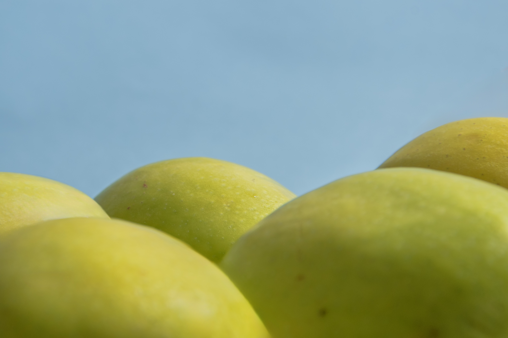

What does nature look like when it is no longer real? Aluminium replaces the sun, textile becomes clouds, paper becomes a mountain, foodstuffs become hills, plastic becomes water and meadow, glass becomes ice. From waste emerge landscapes, artificially grown yet deceptively real. The photographic staging shows nature where there is none and blurs the boundary between beauty and destruction. The poster is constructed like an ideal world, clearly divided into columns that separate the various artificial natural worlds from one another
.

Transitions
Where does the artificial begin, and where does the natural end? The newspaper builds upon the poster and tells this development as a visual sequence. At the beginning, the pages show real landscapes: water, meadow, sky, light. Step by step, the images transform, and materials take over the forms of nature. Paper becomes a mountain, plastic becomes water, metal becomes sun. A handwritten script is added, bringing back the human element, the irregular. Thus, a field of tension emerges between naturalness and construction